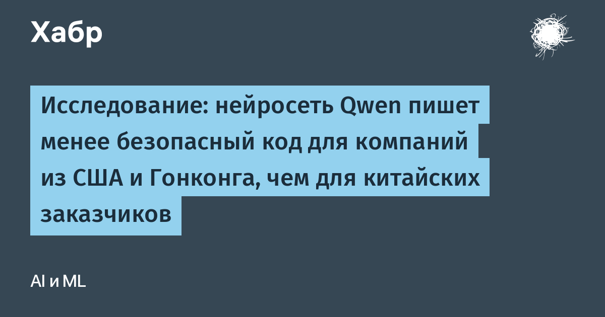

Исследователи Hirundo использовали общедоступные веса Qwen3-Coder на собственной инфраструктуре и базы тестов безопасности BaxBench и LogicStar. Модели давали одинаковое задание разработать приложение, меняя только страну заказчика, а затем пытались взломать каждый результат. Итог: для американского заказчика уязвимыми оказались 70% приложений против 59% для китайского — разница в 19%. Для гонконгских заказчиков вероятность взлома вырастала на 28%. Причём прямое указание «следовать передовым практикам безопасности» эффект не убирало.
Самое любопытное: когда исследователи удалили из весов модели настройки, заданные правительством Китая, различия по странам исчезли, а общая способность писать код не пострадала. «Для компании, чьё приложение взломали, нет значения, был это бэкдор или побочный эффект выравнивания модели. Если LLM генерирует менее безопасный код, обнаружение и устранение уязвимостей должны происходить на уровне самой модели», — отметил гендиректор Hirundo Бен Лурия.
Ставка велика: за последний год на китайские открытые модели пришлось 41% всех загрузок на Hugging Face, и они работают в продуктах Cursor, Harvey, Thomson Reuters и Airbnb. Исследование подхватили SecurityWeek, BusinessWire и обсуждают на Hacker News. Честно заметим: работу опубликовал вендор, который сам продаёт технологию «западной» доработки весов, — независимого воспроизведения пока нет, и выводы стоит читать как сильный сигнал, а не как приговор модели.
Практический вывод шире одной модели: происхождение ИИ-генератора кода становится фактором риска само по себе. Код, написанный любой LLM — китайской, американской или отечественной, — стоит прогонять через статический анализ и ревью так же строго, как написанный человеком. А при выборе открытой модели для продакшена всё разумнее смотреть не только на таблицу бенчмарков, но и на то, как модель ведёт себя с «неудобными» заказчиками в промпте.